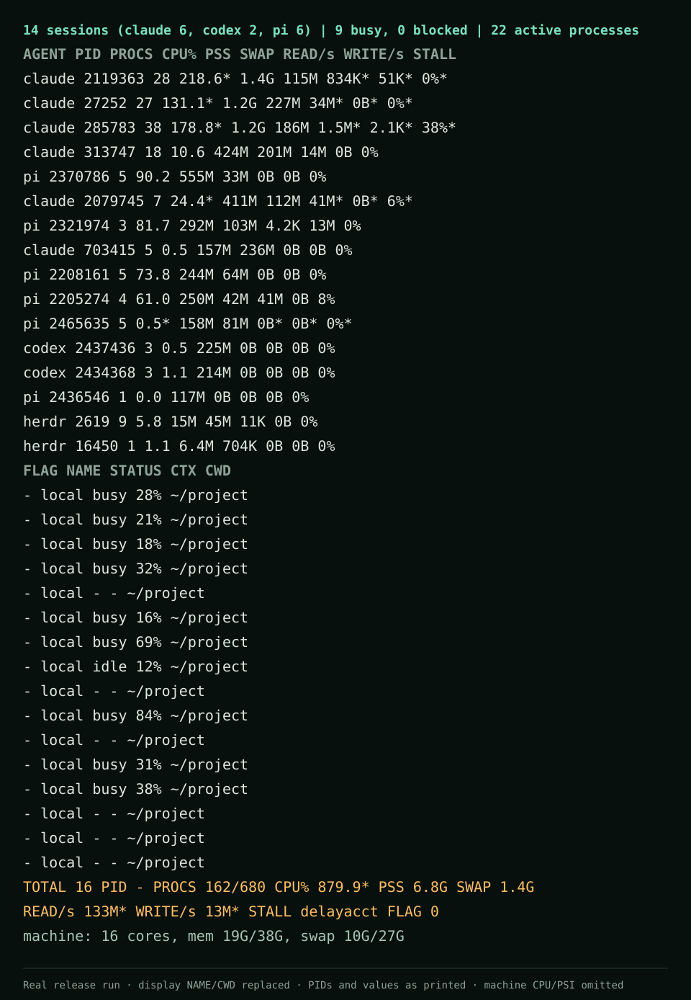

One session, whole tree
Each agent is shown with every process below it, including MCP servers, shells, and builds.
A session-first resource monitor for Linux
AgentCenter rolls an agent and everything it launches into one live view—CPU, PSS and swap, disk throughput, and I/O stall.
Linux · GTK4 + libadwaita · MIT licensed

The problem
AI coding sessions launch MCP servers, shells, builds, and other children. CPU, memory, swap, and disk activity get scattered across those processes, so the session responsible is hard to identify.
AgentCenter groups the whole tree under the agent that started it, then samples that session as one unit.
What it does
Each agent is shown with every process below it, including MCP servers, shells, and builds.
See CPU, proportional memory and swap, reads and writes per second, plus I/O stall for each session. Stall percentages need kernel.task_delayacct=1; otherwise AgentCenter reports the count of threads in D state. Metric details.
Use the GTK4 desktop app or take table and JSON snapshots with agentcenter-cli.
Resource sampling is local and read-only. Transcript overlays retain metadata and hashes: tool-call arguments are normalized, hashed, and immediately discarded. Handoff is a separate opt-in action that can send bounded projected session text to the provider selected in Pi. Read the privacy design and Handoff limits.
Built-in detection
Detection adapters identify known agent process names and layouts. Extra process names can be added from the CLI environment.
Install
AgentCenter is Linux-only and currently ships from source. The installer builds both programs, adds the desktop entry, icon, and settings schema under ~/.local, and can update the same installation in place.
git clone https://github.com/eduardopin/agentcenter.git
cd agentcenter
bash install.shRequires Rust 1.99 or newer, a C linker, pkg-config, GTK 4.22+, and libadwaita 1.9+. On Debian or Ubuntu, bash install.sh --deps can install missing build libraries with sudo. On Ubuntu, GTK 4.22 and libadwaita 1.9 ship only in 26.04; older releases cannot build the GUI.
Headless by design
The CLI samples twice so CPU and disk rates are deltas. Its default interval is one second, and the same snapshot can be emitted as JSON.
Read the CLI usage guideagentcenter-cli snapshot
agentcenter-cli snapshot --json
agentcenter-cli snapshot --interval-ms 2000
# Add agents by process name
AGENTCENTER_EXTRA_AGENTS=my-agent \
agentcenter-cli snapshotPre-alpha, plainly stated
The current performance and GUI gates fail. The 500-process D-state fixture measured a 5.036 ms median against a budget below 5 ms. GUI first frame measured 456.4 ms against 300 ms, and CPU measured 12.198% of one core against 2%. Session actions still have incomplete acceptance evidence.
Read the known limitations and measurementsContribute
Start with the contributor path, choose a small issue, or review the open acceptance work. The project needs testing, documentation, adapter work, accessibility evidence, and performance fixes.